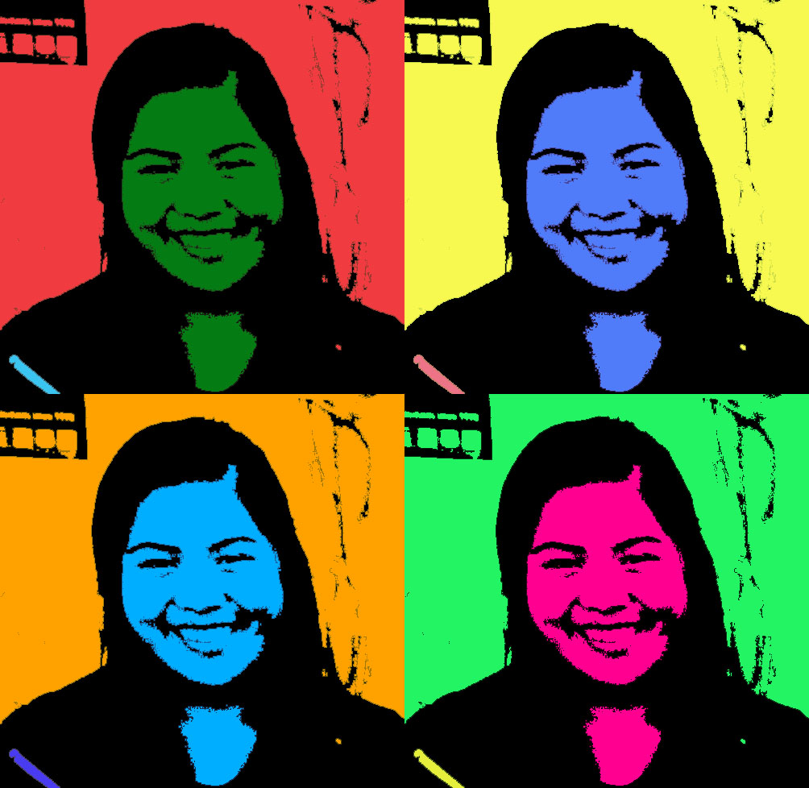
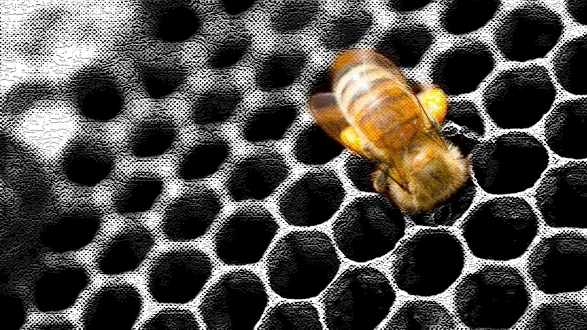
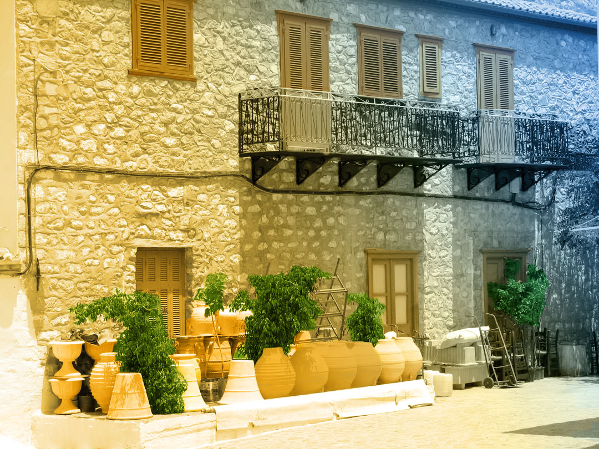
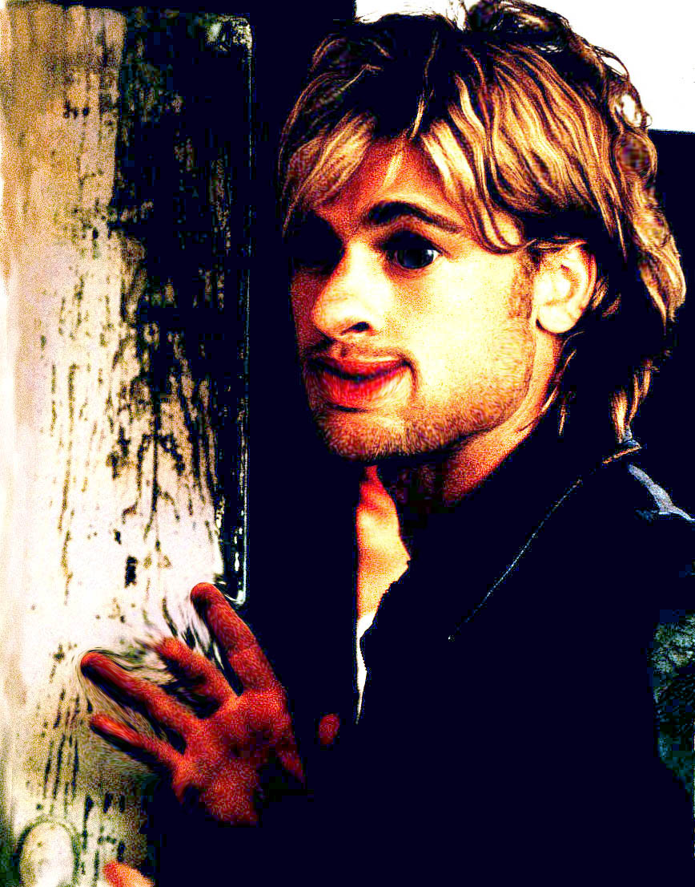
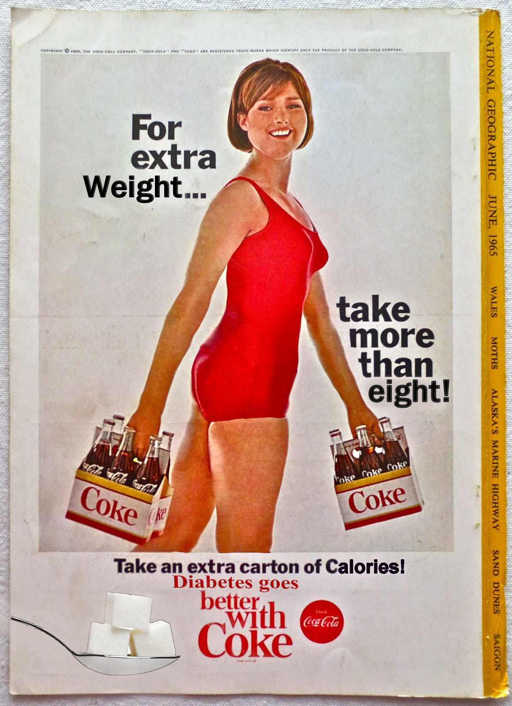
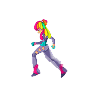

Gallery
These are some of the photoshop projects that I have done.
This picture was from an assignment called extraction. in this photo I extracted a polar bear and a picture of myself and pasted it onto a winter themed background. This is my favorite picture that I have done.
This is a picture that I photoshopped that was inspired by one of the famouse art pieces of Andy Warhol. I really like the colors that I used in this photo.
This assignment that I did is called back to history. In this assignment we used the history tool on photoshop to add color texture to the picture.
This assignment was to work on colorizing. The original photo was black and white and we had to use differnt tools and techniques to bring color back to the image.
I edited this pic of Brad Pitt by using the liquified effect.
This is the photo that I edited for the final of last semester.This piece was edited to mock the original image to show the real truth about what the advertisment is trying to say.
This is an animated gif of a girl running that I made from a 12 picture sprite sheet.The one this that I did not like about making this would be how time consuming this was.
This is an original gif that I made from using timeline on Photoshop. To me this was very simple because all I had to do was draw a few images on different layers and move it around when forming the timeline for the images to move. I got this idea for my gif because I really like cats and I wanted to make it have a Mario theme where the character is jumping over certain objects to get to the prize.

This is a gif I made using photohop. I took this picture on my trip to yosemite and I really liked how the clouds looked in this photo. It makes me think of Zeus and how he would live in the clouds.